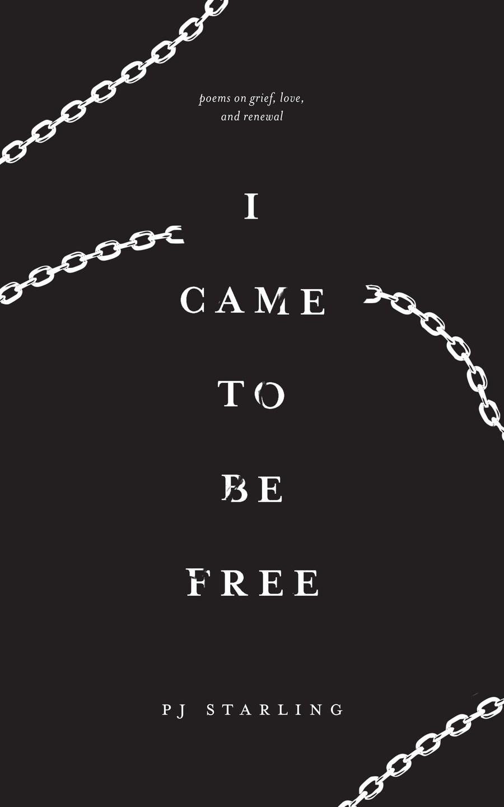

I came to be free
Poems on grief, love, and renewal · PJ Starling
Finding a passage…
Card options
Press space for another
The poems
All nine, in full. Tap any stanza to make a card of it.
No lines match that. Try another word.

The book
Using original metaphor and lyrical language, PJ Starling examines the deepest sorrows and the greatest triumphs of the human experience — the struggle to forgive oneself for past wrongs, the search for hope amidst the chaos of the modern world, and the desire for true intimacy.
Nine poems. 42 pages. These heartfelt verses invite readers into a space where they are seen and free to feel without judgment.
Buying direct from FriesenPress supports a Canadian author most. ISBN 978-1-03-837224-6 (paperback) · 978-1-03-837225-3 (hardcover) · 978-1-03-837226-0 (eBook)
About PJ Starling
PJ Starling lives in Vancouver, BC, with his nine-year-old son. I came to be free is his second book of poetry. His poem “Where light never goes” was featured by The Art of Autism, an organization that showcases the creative abilities of neurodivergent individuals.
For him, writing poetry is a form of therapy that has helped him through periods of change in his life. He hopes his poems will do the same for his readers.